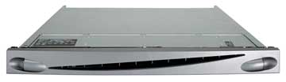
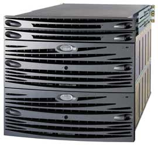
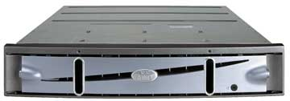
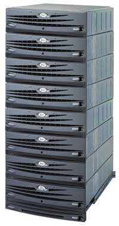
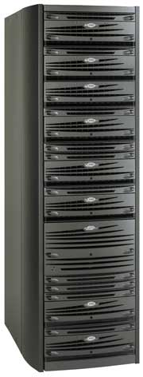
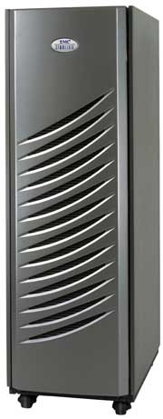
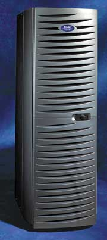

Александр Николов
anikolov@bytemag.ru
Вне всяких сомнений можно утверждать, что на сегодняшний момент эффективная инфраструктура централизованного хранения и доступа к корпоративным данным представляет собой неотъемлемую и весьма существенную часть современной информационной системы любого предприятия. Функции надежного хранения, своевременного и быстрого доступа, его разграничения и сохранения конфиденциальности данных, обеспечиваемые современными системами хранения, можно рассматривать как немаловажные конкурентные преимущества компаний, позволяющие им добиваться успеха на основных рынках сбыта и успешно завоевывать новые в условиях современного информационного общества. Хорошо продуманная, скоординированная, четкая корпоративная политика в области хранения и обработки данных служит ключом к построению в условиях современной российской экономики эффективной компании европейского типа с гибкой структурой управления и прозрачным внутренним устройством, обладающей достаточным потенциалом для достойной конкуренции на интегрированном мировом рынке.
В рамках распределенной клиент-серверной архитектуры обработки данных, пришедшей на смену вертикально интегрированным решениям на базе мэйнфреймов, за последнее десятилетие был выработан универсальный подход к построению хранилищ данных, представляющий собой объединение множества специальным образом сконструированных систем хранения - так называемых NAS-серверов и серверов обработки данных - в рамках единой распределенной сетевой инфраструктуры посредством открытой архитектуры SAN.
За время, прошедшее с момента появления первых таких решений, рынок сетевых систем хранения данных успел набрать обороты, развиться и окрепнуть - по оценкам крупнейших аналитических агентств, сегодня его объемы исчисляются миллиардами долларов, а ведущие игроки входят в список самых крупных и влиятельных компаний ИТ-отрасли в целом. Один из бесспорных лидеров этого сегмента - корпорация EMC (http://www.emc.com), известная не только своими техническими решениями, но и инновационными технологиями построения хранилищ данных вкупе с комплексными программами интеграции, нацеленными на все значимые отрасли современной экономики. В силу известных ограничений данный обзор посвящен лишь одной из сторон деятельности EMC - системам хранения данных, поставляемым компанией (прочие аспекты ее деятельности, вероятно, будут рассмотрены в следующих публикациях).
Компания EMC предлагает весьма широкий спектр подключаемых к сети хранилищ, что позволяет удовлетворить практически любые требования средних и крупных заказчиков - от центров обработки данных до корпоративных филиалов. Все системы EMC совместимы с наиболее распространенными и отработанными инфраструктурными ИТ-решениями, в том числе с технологиями Microsoft, обеспечивают достаточный уровень доступности, масштабируемости и производительности и характеризуются широкими возможностями управления - благодаря большому набору функций управлять инфраструктурой можно с одной консоли. Разумеется, заказчикам предоставляются сервисное обслуживание и поддержка производителя, оказываемые компанией EMC в масштабе всего земного шара.
Семейство NAS-систем
Серия EMC NetWin, включающая модели NetWin 110 и NetWin 200, нацелена на нишу небольших или удаленных офисов, региональных филиалов, подразделений компаний или быстро растущих предприятий с устаревшими файловыми серверами на базе платформ Microsoft Windows, Novell NetWare или Apple Macintosh, позволяя в рамках единого комплексного решения объединить данные нескольких подключенных к сети хранилищ. Мощная и достаточно недорогая система совмещает доступность и гибкость хранилищ CLARiiON с простотой ОС Microsoft Windows Storage Server 2003, обеспечивая масштабируемость, надежность и высокую готовность, а также простоту управления ресурсами сервера обработки и хранилища данных с одной консоли через привычный Windows-интерфейс и надежную защиту данных с помощью ПО Legato Replistor для задач репликации и восстановления.
|  | NAS-система серии EMC NetWin.
|
Устройства серии NetWin поддерживают распространенные сетевые протоколы доступа к данным, такие, как CIFS, NFS, IPX, Appletalk, HTTP и FTP, имеют единственный блок переноса данных (на базе одного процессора Intel в случае NetWin 110 и двух процессоров у NetWin 200), масштабируются до 35 Тбайт и совместимы со всей серией массивов хранения данных CLARiiON, включая новую модель EMC CLARiiON AX100.
Устройства семейства NetWin, будучи NAS-системами начального уровня, обеспечивают простой и экономичный способ постепенно увеличивать объем хранилища, повышать его производительность и уровень обслуживания - по мере роста потребностей заказчиков используемую ими модель легко усовершенствовать до систем серии EMC NS700 или Celerra Clustered Network Server.
Серия систем EMC NS/Шлюзовые, включающая модели NS500G, NS700G и NS704G, задает новый стандарт для NAS-систем среднего уровня с полным набором современных функций и возможностей, включая улучшенную кластеризацию, высокую производительность, максимальную простоту использования, и с приемлемой стоимостью. Эти устройства наилучшим образом подходят для интеграции NAS-серверов в уже существующие на предприятии SAN-решения, типичная сфера их применения - среды с расширяющимся использованием файловых серверов и специальными требованиями к производительности, доступности и масштабируемости при использовании нескольких протоколов. Устройства серии NS/Шлюзовые позволяют объединить хранилища SAN и NAS в единую, легко управляемую систему сетевого хранения с высоким уровнем готовности, повысив эффективность инвестиций в системы хранения EMC CLARiiON CX и Symmetrix DMX и обеспечив им прозрачную интеграцию.
|  | Устройство из серии EMC NS.
|
Серия EMC NS/Шлюзовые позволяет заказчикам строить решения, подбирая модели по стоимости, продуктивности и специальным возможностям: шлюз начального уровня EMC NS500G обладает высокой производительностью и готовностью, прост в обслуживании и при этом поставляется по весьма низкой цене; система EMC NS700G предоставляет пользователю повышенную производительность и емкость вкупе с максимальными возможностями расширения; NAS-шлюз EMC NS704G отличается улучшенными возможностями кластеризации по схеме N+1, допускает расширение до четырех блоков переноса данных и имеет чрезвычайно высокую производительность (в три раза большую, чем у системы NS700G), ранее доступную только в системах NAS высшего уровня. Все решения серии поддерживают диски с интерфейсом как Fibre Channel, так и ATA - заказчики могут выбирать конфигурацию исходя из соотношения цена/производительность. Серия EMC NS/Шлюзовые обеспечивает доступ к данным с использованием множества протоколов, в число которых входят, в частности, сетевые протоколы NFS v2 и v3, CIFS, FTP, SNMP, NDMP, NTP, SNTP и TFTP.
Комплект поставки серии EMC NS/Шлюзовые включает ПО с интуитивно понятным Web-интерфейсом, которое позволяет решать сложные задачи администрирования, управляя системами этой серии либо как автономными устройствами, либо как частью единой инфраструктуры.
Главное же преимущество шлюзовых NAS заключается в одновременном повышении эффективности инвестиций в систему хранения, добавлении новых возможностей и консолидации хранимых данных.
Серия расширенных NAS-решений EMC NS/Интегрированные - это высокопроизводительные интегрированные NAS-системы среднего уровня для использования в специальных областях и особых местах размещения. Они представляют собой простые во внедрении и обслуживании решения типа "все в одном", с высокой степенью готовности и выделенными сетевыми хранилищами EMC CLARiiON. Типичная сфера применения решений серии NS/Интегрированные - построение распределенной среды доступа к данным, удовлетворяющей некоторым специальным требованиям к производительности, доступности и масштабируемости при использовании нескольких протоколов доступа, когда инфраструктура SAN не является обязательным условием.
В рамках серии доступны две модели - система начального уровня NS500, представляющая собой экономичное решение для консолидации данных в распределенной среде хранения, и NS700 с более высокой производительностью и емкостью. Младшая модель отличается высокой готовностью и простотой управления при весьма низкой цене. Это полнофункциональное NAS-решение интегрируется с сетевым хранилищем CLARiiON CX500 и позволяет значительно повысить производительность по сравнению с хранилищем, подключаемым напрямую. Старшая модель - высокопроизводительное встроенное NAS-устройство с выделенным хранилищем CLARiiON CX700. Обе они доступны в конфигурации с одним или двумя блоками переноса данных и с дисками стандартов Fibre Channel или ATA по выбору. Для обеспечения высокой степени готовности и непрерывного доступа к файлам серия NS/Интегрированные допускает прозрачное динамическое переключение на "горячий" резервный блок переноса данных. Предусмотрены также RAID-защита на аппаратном уровне, возможность замены компонентов без прекращения работы, резервная батарея для процессора хранилища и функции расширенного управления томами.
Все системы серии поддерживают протокол iSCSI в среде как Windows, так и Linux, что позволяет без труда объединять уже развернутые подключенные напрямую серверы и хранилища данных в единую интегрированную среду. Помимо этого, предусмотрена возможность доступа к данным по протоколам NFS v2 и v3, CIFS, FTP, SNMP, NDMP, NTP, SNTP или TFTP.
В случае изменения характера решаемых заказчиком задач любую систему серии NS/Интегрированные можно обновить до шлюзовой конфигурации, что дает заказчикам дополнительные гарантии защиты инвестиций.
Система EMC Celerra Clustered Network Server (CNS) - шлюзовое NAS-решение с числом блоков переноса данных от 2 до 14, обеспечивающее до 325 000 операций в секунду и поддерживающее до 224 прямых сетевых соединений. Она интегрируется с системами сетевого хранения Symmetrix или CLARiiON, обеспечивая высокую надежность, масштабируемость и производительность. Устройство поддерживает следующие сетевые протоколы доступа к данным: NFS v2/v3, CIFS, FTP, SNMP, NDMP, NTP, SNTP и TFTP. Типовая область применения Celerra CNS - крупные серверные среды общего назначения, где обязательна платформа для поддержки критичных высокопроизводительных приложений обслуживания файлов.
Сетевые хранилища EMC CLARiiON
Семейство сетевых систем хранения данных среднего уровня EMC CLARiiON предоставляет широкий диапазон решений, выполненных на основе мощной, проверенной временем архитектуры седьмого поколения. В рамках семейства заказчики могут подобрать наиболее подходящее им по производительности, возможностям и цене устройство - от системы начального уровня EMC CLARiiON AX100 до старшей модели CX700.
Устройства серии CLARiiON AX предлагают эффективное решение задач сетевого хранения данных, обладающее хорошими техническими показателями при доступной цене. Модель AX100 обеспечивает все преимущества сетевого хранения - консолидацию, автоматизацию и улучшенную защиту данных, объединенные в одном мощном и экономичном решении. Она совместима с серверными платформами Windows, Linux и NetWare и допускает их подключение к хранилищу с использованием технологии SAN или NAS, а также напрямую.
Модели AX100 выпускается в двух разновидностях: CLARiiON AX100SC с одним RAID-контроллером - недорогое решение, снабженное лишь основными функциями обеспечения целостности данных, основанными на механизме хранения с избыточностью, организованной по стандарту RAID 5, и защите данных в кэш-памяти за счет ее питания от независимой аккумуляторной батареи. Второй вариант, CLARiiON AX100 с двумя RAID-контроллерами, - это более мощное решение, имеющее дополнительные функции: дублирующие друг друга процессоры, работающие по схеме "активный-активный", и зеркалируемая кэш-память с двумя независимыми источниками питания для обеспечения высокой доступности и сквозной защиты данных в критичных для бизнеса приложениях.
|  | Система CLARiiON AX100.
|
Встроенный в систему функционал позволяет легко устанавливать, конфигурировать и контролировать AX100 без дополнительных затрат - интерфейс управления, основанный на использовании "мастеров", чрезвычайно упрощает настройку и мониторинг работы массива. Использование так называемых моментальных снимков позволяет в определенные моменты времени создавать резервные образы хранимых данных, которые можно использовать для восстановления в случае сбоя. Рациональная конструкция модели AX100 позволяет установить в компактном корпусе высотой 2U, предназначенном для монтажа в 19-дюйм стойку, до двенадцати накопителей с интерфейсом Serial ATA, доведя тем самым суммарную емкость хранилища до 3 Тбайт, при этом наращивание объема значительно упрощается за счет поддержки виртуальных томов.
Системы среднего уровня CLARiiON CX используют современные технологии, реализующие новый уровень защиты хранимых данных, включая полную и инкрементную репликацию и зеркалирование в любое время и на любом расстоянии. Последние решения семейства CX - модели CX300, CX500 и CX700 - обеспечивают весьма высокую скорость работы, постоянную доступность и целостность данных, а также увеличенную масштабируемость - от 5 до 240 дисков в одной системе с возможностью расширения по мере необходимости. Кроме того, все семейство CX, от систем начального уровня до корпоративных решений, использует расширение LUN (metaLUN), в оперативном режиме повышающее доступность хранимой информации. В серии CX реализованы технические решения - например, объединение в одном массиве дисков с интерфейсами ATA и Fibre Channel, - за счет которых достигается гибкость и экономия средств при построении систем хранения. Наконец, с помощью программных инструментов EMC Navisphere Management Suite среда хранения данных CLARiiON CX обеспечивает пользователям простой Web-интерфейс для мониторинга, конфигурации и управления всеми своими функциями и приложениями из любого узла и в любое время.
|  | Система CLARiiON CX500.
|
Дополнительное преимущество серии CLARiiON CX - возможность перехода с уже существующих систем на новые без предварительного перемещения имеющихся данных, без потери совместимости программных средств разных поколений и перерыва на модернизацию аппаратного или программного обеспечения, что позволяет защитить прошлые, настоящие и будущие инвестиции заказчиков.
Система сетевого хранения данных CX300, новый продукт серии CLARiiON CX, - одно из самых передовых решений в своем классе. От предшественника модель CX300 отличается большими функциональными возможностями, расширенным объемом хранения (до 13 Тбайт) и повышенной производительностью при той же цене.
Система оптимизирована для работы в средах Windows, Unix, Linux и NetWare для рабочих групп, может содержать от 5 до 60 накопителей, обеспечивает скорость передачи данных 680 Мбит/с и позволяет выполнять до 50 000 операций ввода-вывода в секунду. Она обладает хорошей производительностью, реализует (с помощью программы SnapView) услуги локальной репликации, основанные на массивах, а также (с помощью программы PowerPath) услуги динамического выравнивания нагрузки и поиска нескольких резервируемых путей подключения к хранилищу. CX300 имеет типовой для всей серии CLARiiON CX интерфейс управления, основанный на Интернет-технологиях.
Благодаря использованию недорогих дисков с ATA-интерфейсом длительность операций резервного копирования и восстановления данных сокращается с многих часов до нескольких секунд, за счет чего можно рентабельно хранить больше информации в оперативном режиме, так как системы CLARiiON с дисками ATA обладают лучшей производительностью и доступностью данных по сравнению с накопителями на магнитной ленте. Кроме того, в одном массиве можно совмещать ATA-диски с дисками Fibre Channel при 100%-ной совместимости ПО.
Система сетевого хранения данных CLARiiON CX500 представляет собой расширение младшей модели CX300 с добавлением некоторых новых технических возможностей и функционала, переводящих ее на следующий уровень. Благодаря четырехкратному преимуществу в вычислительной мощности процессора и 4-Гбайт кэшу CX500 демонстрирует высокий уровень производительности и наилучшие показатели экономичности хранения. В системе можно использовать большое количество дисков - в относительно компактном пространстве 19-дюйм стойки высотой 25U можно разместить от 5 до 120 накопителей. Вместе с CX500 поставляется ПО со всеми теми же функциональными возможностями, что и у старшей модели CLARiiON CX700.
Система CX500 спроектирована для упрощения консолидации данных путем одновременной поддержки до 128 узлов и сертифицирована для работы в распространенных серверных средах, включая платформы Windows, Unix, Linux и NetWare. Это весьма гибкое решение, которое может функционировать в рамках SAN, NAS или DAS-решений, а также в сетях прямого доступа, использующих протокол iSCSI.
Сетевое хранилище данных CLARiiON CX700, вершина линейки CLARiiON CX, благодаря большим вычислительным возможностям, высокой производительности и экономичной цене установило новый стандарт для систем хранения среднего уровня. Модель CX700 предназначена для громоздких приложений, работающих с большими корпоративными базами данных. Имея четыре процессора с частотой 3 ГГц и восемь внутренних дисковых портов Fibre Channel, система обеспечивает более высокую вычислительную мощность и производительность, чем любой конкурирующий с ней продукт. Кроме того, приобретая CX700, заказчики получают максимальную масштабируемость - устройство линейно расширяется по накопителям до 240 дисков с возможностью кэширования, пиковой производительностью до 200 000 операций ввода-вывода в секунду и скоростью передачи данных 1520 Мбит/с. Для упрощения консолидации данных система спроектирована таким образом, что позволяет одновременно использовать до 256 узлов.
CLARiiON CX700 поставляется с полным пакетом программ EMC Navisphere Management Suite, предназначенным для автоматизированного управления хранением данных и построенным на Интернет-технологиях. Кроме того, в комплект входит ПО SnapView для локальной, основанной на массивах репликации данных, программа MirrorView для непрерывной защиты бизнес-приложений путем синхронного и асинхронного зеркального отображения данных, инструментарий PowerPath для динамического выравнивания нагрузки и контроля за процессом ввода-вывода, а также модуль metaLUN для расширения объема хранения и управления несколькими массивами.
Сетевые системы хранения EMC Symmetrix
Устройства серии EMC Symmetrix DMX - это ведущие решения класса high-end для надежного хранения данных, призванные удовлетворить самые высокие требования, которые заказчики могут предъявить к системам хранения. Они характеризуются сверхвысокой производительностью, самой высокой надежностью, непрерывной защитой критически важных бизнес-процессов и богатейшим набором возможностей используемого ПО.
Система Symmetrix DMX наилучшим образом проявляет себя в условиях, когда в соответствии с соглашениями об уровне сервиса заказчикам требуется решение самого высокого уровня производительности и надежности, функционирующее в режиме 24х7х365 без отказов и сбоев в работе. На данный момент покупателям доступны конфигурации из весьма широкого спектра - от эффективной модульной модели DMX800 до решений класса high-end в виде интегрированных систем DMX1000 с одним отсеком, DMX2000 с двумя отсеками и DMX3000 с тремя отсеками, предназначенных для наиболее критичных сред хранения данных.
|  |  |
| Модульная система Symmetrix DMX800.
|
Интегрированная система Symmetrix DMX1000 с одним отсеком.
|
Все системы Symmetrix DMX построены в архитектуре Symmetrix Direct Matrix - испытанной временем технологии хранения данных, обеспечивающей наиболее высокую производительность для операций ввода-вывода, благодаря чему они характеризуются постоянной высокой продуктивностью вне зависимости от уровня нагрузки. Чрезвычайно гибкая архитектура DMX легко масштабируется вверх и вниз, что позволяет создавать конфигурации согласно конкретным требованиям.
Решения DMX работают в любых обстоятельствах - улучшенные характеристики надежности, система обеспечения целостности данных, включающая организацию их полной избыточности, упреждающий мониторинг, обнаружение и исправление ошибок позволяют им функционировать даже в самом сложном окружении. Используя возможности безопасной модернизации и конфигурирования в оперативном режиме, заказчики смогут значительно сократить полную стоимость владения системой хранения и прочие издержки, а также исключить плановые и внеплановые простои.
Решения Symmetrix DMX поставляются с набором ПО для автоматизированного управления процессом хранения данных, работающим в рамках интеллектуальной оперативной среды хранения Enginuity и полностью совместимым с предыдущими версиями. Устройства DMX обладают исключительно гибкими возможностями организации и настройки каналов передачи данных - пользователи могут подключать систему хранения к мэйнфреймам, каналам Fibre Channel открытых SAN-систем или, используя встроенный адаптер Gigabit Ethernet, интегрировать ее в решения для дистанционного зеркалирования на базе протоколов FCIP и iSCSI. В этих случаях конфигурирование интерфейсов ввода-вывода выполняется с помощью средств FICON или ESCON.
С целью повышения доступности данных и непрерывности операций ввода-вывода программы семейства SRDF, которые служат в решениях Symmetrix DMX для дистанционной репликации данных, позволяют копировать и пересылать любое количество данных в любое время и на любое расстояние. Кроме того, они могут взаимодействовать с программами семейства TimeFinder для локальной репликации данных, снижая тем самым общие затраты на репликацию.
Серия Symmetrix DMX делает системы хранения данных класса high-end доступными любым организациям, в том числе компаниям с растущими требованиями к уровню обслуживания. Заказчики могут выбирать решения, пригодные для построения любой высокопроизводительной системы хранения данных, в самом широком диапазоне конфигураций и типоразмеров. Например, в системы DMX800 может входить от 8 до 120 накопителей общей емкостью более 17,5 Тбайт. В свою очередь, интегрированные системы DMX с одним, двумя и тремя отсеками доступны в конфигурациях, оптимизированных по производительности, - в них устанавливается от 48 до 576 дисков суммарной емкостью до 84 Тбайт в одной системе.
Системы хранения EMC Centera CAS
С помощью EMC Centera - системы, основанной на технологии Content Addressed Storage (CAS), - пользователи могут организовать быстрый оперативный доступ ко всему фиксированному контенту с масштабируемостью до петабайтных объемов. EMC Centera - это простое и безопасное решение для рентабельного хранения, защиты и удаления широкого диапазона фиксированных цифровых данных, к которым относятся рентгеновские снимки, архивы электронной и голосовой почты, электронные документы, широковещательные информационные потоки, выходные данные мэйнфреймов и многое другое. С помощью решений из серии EMC Centera Compliance Edition заказчики могут построить систему хранения данных, соответствующую самым строгим нормативным требованиям.
|  | Система хранения EMC Centera.
|
***
В завершение стоит отметить, что данный обзор, "за бортом" которого остались многие технические и технологические аспекты, дает читателям лишь общее представление о решениях корпорации EMC в области хранения данных. Круг предлагаемых компанией систем не ограничивается перечисленными в обзоре устройствами: например, доступны также высокопроизводительные модели уровня high-end Symmetrix 3000, Symmetrix 5000, Symmetrix 8000 и Symmetrix z8000, обеспечивающие максимальный уровень производительности при работе с корпоративными данными, их надежную сохранность и доступ в круглосуточном режиме 365 дней в году. В последующих номерах журнала мы планируем подробнее рассмотреть наиболее интересные с технической точки зрения и востребованные на российском ИТ-рынке модели.